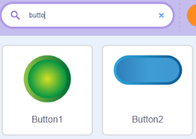
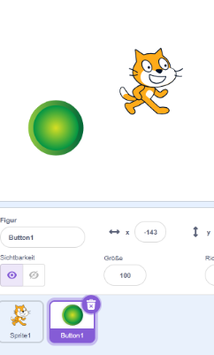
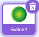
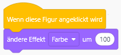
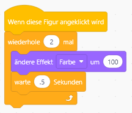
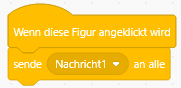
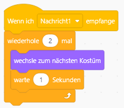

Unser erster
Button!
Hier lernst du wie du einen Button in dein Spiel einfügst und ihm eine Funktion zuteilst mit der du Aktionen in deinem Spiel ausführen kannst.
Hier lernst du wie du einen Button in dein Spiel einfügst und ihm eine Funktion zuteilst mit der du Aktionen in deinem Spiel ausführen kannst.


Damit wir einen Button in unser Spiel hinzufügen können, müssen wir erstmal eine Figur auswählen, die als unser Button funktioniert. Hier wählen wir einen runden Button.

jetzt suchst du in der Suchzeile oben links nach dem Wort Button und wählst einen der Button aus die dir angezeigt werden.

Wenn du alles richtig gemacht hast, sollte dein gewählter Button in dem kleinen Fenster oben rechts auftauchen.

auf das
Symbol für
den Button
Jetzt geben wir dem Button eine Funktion.
Wenn der Button - auch Figur genannt - angeklickt wird, führt er den folgenden Block aus.
Hier wechselt der Button seine Farbe.
Die Farbe kann Werte von 1 - 200 annehmen. Wobei 200 die Originalfarbe ist.

Klicke rechts
auf das
Symbol für
den Button
Wir wechseln mit dieser Aktion auch wieder die Farbe des Buttons.
Aber dieses Mal wechseln wir zwei Mal die Farbe. Das hat den Effekt, dass unser Button jetzt aussieht wie als hätten wir ihn gedrückt.
Das gibt dir als Spieler die Rückmeldung, dass du auch wirklich den Button gedrückt hast und er seine Aktion ausführt.
Wenn er dann wieder seine normale Farbe hat, kannst du ihn erneut drücken.

Klicke rechts
auf das
Symbol für
den Button
Jetzt lassen wir den Button auch mal andere Figuren bewegen. Damit wir das machen können benutzen wir einen Block der nennt sich
"sende "Nachricht" an alle".
Wenn wir den Button anklicken soll er eine Nachricht - auch als Signal bekannt - senden. Die Nachricht bekommen alle anderen Figuren und Hintergründe.

 Klicke rechts
Klicke rechts
auf das
Symbol für
die Figur
Damit die Figur weiß, dass sie auf die gesendete Nachricht reagieren soll fügen wir jetzt einen Block hinzu, der auf diese Nachricht wartet.
Nachdem die Nachricht gesendet wurde, wird dieser Block aktiviert und die Figur führt die Aktion darunter aus.
Hier wechselt die Figur ihr Aussehen zweimal.

Figur wählen
Dir ist sicher aufgefallen, dass du den Block "Wenn diese Figur angeklickt wird" für alle Figuren nutzen kannst.
Das bedeutet du kannst alles was wir oben an Aktionen gemacht haben, auf jede Figur in deinem Spiel anwenden!
Also was macht deine Figur wenn du sie anklickst? Dreht sie sich im Kreis?
Leuchtet sie in Regenbogenfarben? Ändert sie ihre Größe?